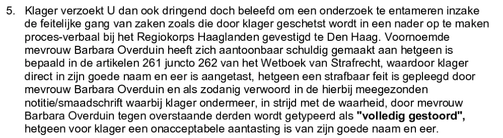

Prueba · Querella
Giltay al fiscal jefe de La Haya, 28 de junio de 1999
El pasaje
«5. Por consiguiente, el querellante le ruega encarecida pero cortésmente que inicie una investigación sobre el desarrollo real de los hechos tal como el querellante los expone en un acta que se levantará más adelante ante el Cuerpo Regional de Policía de Haaglanden, con sede en La Haya. La mencionada señora Barbara Overduin se ha hecho culpable, de forma demostrable, de lo dispuesto en los artículos 261 en relación con el 262 del Código Penal, por lo que el querellante ha sido directamente lesionado en su buen nombre y honor, lo que constituye un hecho punible cometido por la señora Barbara Overduin y formulado como tal en la nota/escrito difamatorio que se adjunta, en la que el querellante, entre otras cosas, contrariamente a la verdad, es calificado por la señora Barbara Overduin ante terceros de “completamente loco”, lo que supone para el querellante un menoscabo inaceptable de su buen nombre y honor». Página 2, punto 5. Traducido del neerlandés; el texto original figura a continuación.
Texto original
“5. Klager verzoekt U dan ook dringend doch beleefd om een onderzoek te entameren inzake de feitelijke gang van zaken zoals die door klager geschetst wordt in een nader op te maken proces-verbaal bij het Regiokorps Haaglanden gevestigd te Den Haag. Voornoemde mevrouw Barbara Overduin heeft zich aantoonbaar schuldig gemaakt aan hetgeen is bepaald in de artikelen 261 juncto 262 van het Wetboek van Strafrecht, waardoor klager direct in zijn goede naam en eer is aangetast, hetgeen een strafbaar feit is gepleegd door mevrouw Barbara Overduin en als zodanig verwoord in de hierbij meegezonden notitie/smaadschrift waarbij klager ondermeer, in strijd met de waarheid, door mevrouw Barbara Overduin tegen overstaande derden wordt getypeerd als ‘volledig gestoord’, hetgeen voor klager een onacceptabele aantasting is van zijn goede naam en eer.” El escrito emplea para el apellido la grafía «Overduin», como también hacen las cartas del Ministerio de Defensa de 1999; en otros documentos del expediente figura «Overduyn». En el original, las palabras «volledig gestoord» (completamente loco) figuran entre comillas dobles.

Por qué importa este documento
Con la carta del 2 de marzo de 1999 al Defensor del Pueblo de los Países Bajos (Nationale ombudsman), una respuesta a la queja de Giltay, el ministro de Defensa adjuntó como anexo el informe de la investigación interna del MID (servicio de inteligencia militar), con la observación de que los resultados hablan por sí solos. En diciembre de 1999, el Defensor del Pueblo incorporó a su informe 1999/507 los informes de las entrevistas de ese anexo como parte de la posición del ministro. Con este documento, Giltay ya había sometido en junio de 1999 la calificación «completamente loco» al Ministerio Público (Openbaar Ministerie). Pidió al fiscal jefe de La Haya que investigara esas palabras como difamación (smaad) y calumnia (laster) con arreglo a los artículos 261 y 262 del Código Penal neerlandés.
Procedencia
- Documento
- Escrito de querella (klaagschrift), 3 páginas, enviado por correo certificado con acuse de recibo y marcado como confidencial
- Remitente
- E.F. Giltay, Scheveningen
- Destinatario
- mr. S.J.M.A. van Gend (con la grafía del escrito de querella), fiscal jefe del distrito judicial de La Haya, Ministerio Público, Palacio de Justicia, La Haya
- Fecha
- Scheveningen, 28 de junio de 1999, redactado en cuatro ejemplares idénticos
- Asunto
- Querella con arreglo a los artículos 261 en relación con el 262 del Código Penal neerlandés, querellante E.F. Giltay contra Barbara Overduin
- Referencias
- Anexo: nota del 12 de febrero de 1999, firmada por el comandante R.F.J.H. de Ruijter; Giltay había recibido la nota a través del Defensor del Pueblo
- Idioma
- Neerlandés
- Conservado por
- Archivo del autor
- Véase también
- Ministerio de Defensa al Defensor del Pueblo de los Países Bajos, 2 de marzo de 1999Informe 1999/507 del Defensor del Pueblo de los Países Bajos, 17 de diciembre de 1999
Citado en: el ensayo «La prohibición cayó, el libro quedó en pie» en el capítulo (3) «Lo que revela el libro: el encubrimiento en torno a Srebrenica».
Ficha de prueba: https://
Documento: https://
Modificado por última vez el 19 de septiembre de 2026, consultado el 27 de noviembre de 2026.

Esta página es una ficha de prueba del libro El general del encubrimiento de Edwin Giltay y del sitio web que lo acompaña.